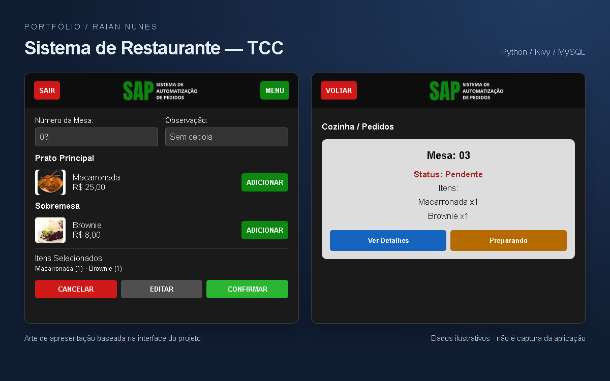

Sistema de Restaurante — TCC
Aplicação de gestão de pedidos para restaurante, desenvolvida em Python com Kivy/KivyMD e MySQL. O repositório e as telas disponíveis ainda estão em organização.
Python
Kivy / KivyMD
MySQL